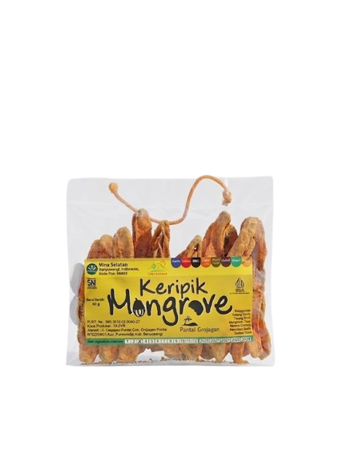

Original
Keripik Mangrove Original
Rasa gurih alami mangrove.
Rp 15.000 (80 gr)UMKM Banyuwangi Olahan Keripik Dari Buah Mangrove
Olahan buah mangrove jenis lindur dari warga pesisir pantai Grajagan, Banyuwangi. Lezat, sehat, dan ramah lingkungan.
Lihat Produk
Tentang Kami
Mina Selatan adalah usaha lokal yang mengolah makanan ringan berbahan dasar mangrove. Didirikan oleh Hj. Nanik pada tahun 2016. Usaha ini mengolah hasil alam pesisir pantai menjadi produk yang bernilai tambah sekaligus memperkenalkan potensi mangrove kepada masyarakat. Berlokasi di Desa Grajagan, Kecamatan Purwoharjo, Banyuwangi, Mina Selatan terus berkomitmen menghadirkan keripik mangrove yang berkualitas, aman, dan bercita rasa khas.
Produk Kami
Rasa gurih alami mangrove.
Rp 15.000 (80 gr)Bumbu balado gurih dan pedas.
Rp 15.000 (80 gr)Aroma khas barbeque yang lezat.
Rp 15.000 (80 gr)Perpaduan pedas dan manis.
Rp 15.000 (80 gr)Rasa jagung bakar gurih manis.
Rp 15.000 (80 gr)Rasa keju gurih di setiap gigitan.
Rp 15.000 (80 gr)Kunjungi Kami